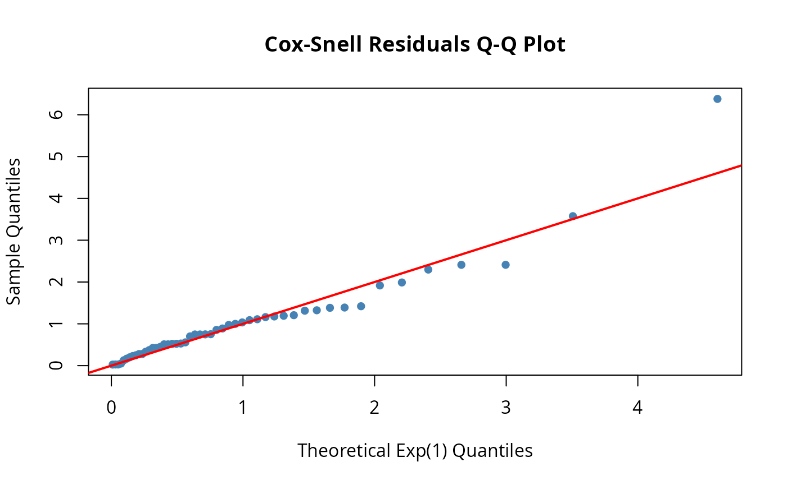
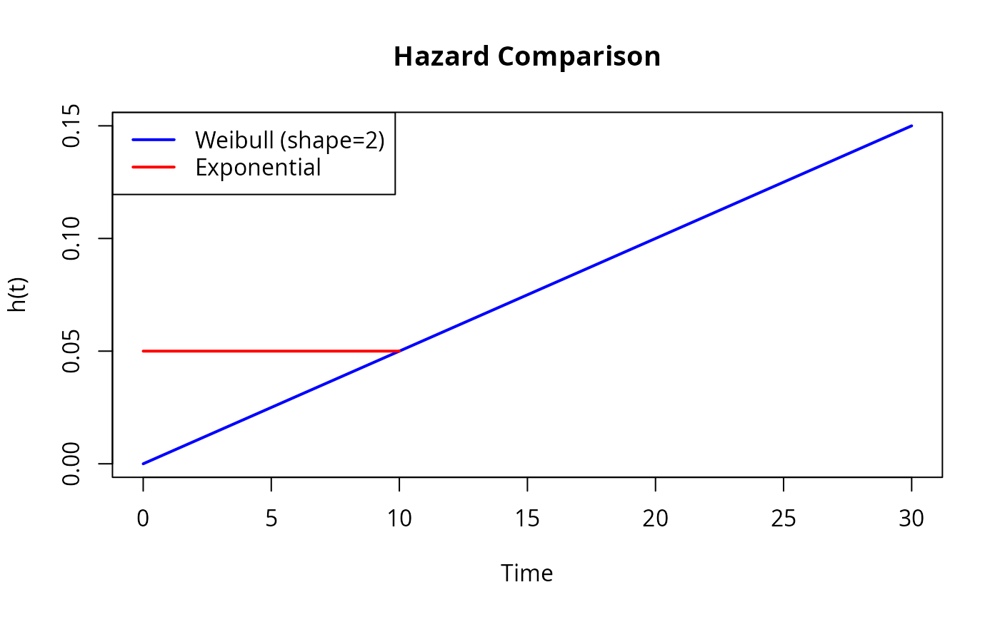

5-Minute Quick Start
The Scenario: You have failure-time data from 50 devices. Some failed during testing; others were still running when the test ended (right-censored). You suspect the failure rate increases over time. You need to: (1) fit a model, (2) estimate parameters with uncertainty, (3) verify the fit.
The dfr.dist package lets you work with survival
distributions through their hazard functions (also
called failure rate functions). This gives you complete flexibility to
model systems with time-varying failure patterns.
Installation
# From GitHub
remotes::install_github("queelius/dfr.dist")Your First DFR Distribution
Let’s start with the simplest case: the exponential distribution with constant failure rate.
# Create an exponential distribution with failure rate lambda = 0.1
# (Mean time to failure = 10 time units)
exp_dist <- dfr_exponential(lambda = 0.1)
# Print summary
print(exp_dist)
#> Dynamic failure rate (DFR) distribution with failure rate:
#> function (t, par, ...)
#> {
#> rep(par[[1]], length(t))
#> }
#> <bytecode: 0x6038b1d0bea8>
#> <environment: 0x6038b1d0e458>
#> It has a survival function given by:
#> S(t|rate) = exp(-H(t,...))
#> where H(t,...) is the cumulative hazard function.Get Distribution Functions
All distribution functions are accessed through a two-step pattern:
# 1. Get the function
S <- surv(exp_dist) # Survival function
h <- hazard(exp_dist) # Hazard (failure rate)
f <- density(exp_dist) # PDF
# 2. Evaluate at specific times
S(10) # P(survive past t=10) = exp(-0.1 * 10) ≈ 0.37
#> [1] 0.3678794
h(10) # Hazard at t=10 = 0.1 (constant for exponential)
#> [1] 0.1
f(10) # PDF at t=10
#> [1] 0.03678794Fitting to Data
Now let’s fit a model to survival data.
# Simulate failure data (in practice, you'd have real data)
set.seed(123)
n <- 50
df <- data.frame(
t = rexp(n, rate = 0.08), # True lambda = 0.08
delta = rep(1, n) # All exact observations
)
head(df)
#> t delta
#> 1 10.5432158 1
#> 2 7.2076284 1
#> 3 16.6131858 1
#> 4 0.3947170 1
#> 5 0.7026372 1
#> 6 3.9562652 1Maximum Likelihood Estimation
# Create distribution template (no parameters)
exp_template <- dfr_exponential()
# Create solver and fit
solver <- fit(exp_template)
result <- solver(df, par = c(0.1)) # Initial guess
#> Warning in log(h_exact): NaNs produced
#> Warning in log(h_exact): NaNs produced
#> Warning in log(h_exact): NaNs produced
#> Warning in log(h_exact): NaNs produced
#> Warning in log(h_exact): NaNs produced
#> Warning in log(h_exact): NaNs produced
#> Warning in log(h_exact): NaNs produced
#> Warning in log(h_exact): NaNs produced
#> Warning in log(h_exact): NaNs produced
# Extract fitted parameter
coef(result)
#> [1] 0.07077333
# Compare to analytical MLE: lambda_hat = n / sum(t)
n / sum(df$t)
#> [1] 0.07077323Model Diagnostics
Check if the model fits well using residuals:
# Create fitted distribution
fitted_dist <- dfr_exponential(lambda = coef(result))
# Q-Q plot of Cox-Snell residuals (should follow Exp(1) line)
qqplot_residuals(fitted_dist, df)
Working with Censored Data
Real survival data often includes censoring - observations where we only know the subject survived past a certain time.
# Data with right-censoring (delta=0 means censored)
df_censored <- data.frame(
t = c(5, 8, 12, 15, 20, 25, 30, 30, 30, 30),
delta = c(1, 1, 1, 1, 1, 0, 0, 0, 0, 0) # Last 5 censored at t=30
)
# Fit handles censoring automatically
solver <- fit(dfr_exponential())
result <- solver(df_censored, par = c(0.1))
#> Warning in log(h_exact): NaNs produced
#> Warning in log(h_exact): NaNs produced
#> Warning in log(h_exact): NaNs produced
#> Warning in log(h_exact): NaNs produced
#> Warning in log(h_exact): NaNs produced
#> Warning in log(h_exact): NaNs produced
#> Warning in log(h_exact): NaNs produced
#> Warning in log(h_exact): NaNs produced
#> Warning in log(h_exact): NaNs produced
#> Warning in log(h_exact): NaNs produced
#> Warning in log(h_exact): NaNs produced
#> Warning in log(h_exact): NaNs produced
coef(result)
#> [1] 0.02439454Beyond Exponential: Weibull Distribution
The exponential assumes constant failure rate. For increasing or decreasing failure rates, use Weibull:
# Weibull with increasing failure rate (wear-out)
weib_dist <- dfr_weibull(shape = 2, scale = 20)
# Compare hazard functions
plot(weib_dist, what = "hazard", xlim = c(0, 30), col = "blue",
main = "Hazard Comparison")
plot(dfr_exponential(lambda = 0.05), what = "hazard", add = TRUE, col = "red")
legend("topleft", c("Weibull (shape=2)", "Exponential"),
col = c("blue", "red"), lwd = 2)
Weibull shape parameter interpretation:
- shape < 1: Decreasing hazard (infant mortality, burn-in failures)
- shape = 1: Constant hazard (exponential)
- shape > 1: Increasing hazard (wear-out, aging)
Next Steps
Now that you understand the basics, explore:
-
vignette("reliability_engineering")- Five real-world case studies -
vignette("failure_rate")- Mathematical foundations -
vignette("custom_distributions")- Build optimized custom distributions -
vignette("custom_derivatives")- Analytical derivatives for MLE
Available Distributions
| Constructor | Hazard Pattern | Use Case |
|---|---|---|
dfr_exponential() |
Constant | Random failures, useful life |
dfr_weibull() |
Power-law (↑ or ↓) | Wear-out, infant mortality |
dfr_gompertz() |
Exponential growth | Biological aging |
dfr_loglogistic() |
Non-monotonic (↑ then ↓) | Initial risk that diminishes |